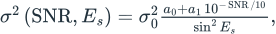
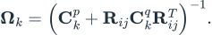

整体概括
统一的在线紧耦合系统
GLIO2 是统一的在线紧耦合 LiDAR-惯性-GNSS 系统：GPU 并行前端把稠密扫描—多扫描 LiDAR、IMU 预积分与原始双差伪距/多普勒放进同一滑窗因子图，离线批优化复用同一批因子细化全程轨迹；作者在三条公开基准与自采 UAV/车辆数据上评估。
对照原文证据
We propose GLIO2, a tightly-coupled LiDAR–Inertial–GNSS system whose GPU-parallel front-end jointly optimizes scan-to-multiscan LiDAR, IMU pre-integration, and raw GNSS measurements in a single sliding-window factor graph, sustaining real-time operation on edge hardware.GLIO2 fuses scan-to-multiscan LiDAR, raw double-differenced pseudorange and Doppler, and IMU pre-integration in a single real-time sliding-window graphThe offline back-end reuses compact relative-pose LiDAR factors generated online to refine the full trajectory without re-registering the point clouds.指标口径：在线、批优化与运行时
需要把 online、batch、精度平台与运行时平台分开：论文报告 batch 在评估系统里 3D ATE 最优，Bridge 在线 1.6 m 水平；Jetson Orin NX 的 39.60–55.54 ms/scan 是特定三种 LiDAR、初始化后并排除排队等待的统计，作者只在多数帧低于 10 Hz 的 100 ms 预算时称实时，不能外推为所有平台/场景的端到端保证。
对照原文证据
On a 5.66 -km bridge traversed at up to 96 km/h, where every competing baseline diverges under LiDAR degeneracy, it maintains 1.6 m horizontal accuracy.GLIO2 achieves the lowest 3D ATE RMSE among the evaluated LiDAR–Inertial–GNSS systems after batch refinementRuntime is measured after initialization to avoid mixing startup overhead with steady-state performance, and queue waiting is excluded. At 10 Hz the per-scan budget is 100 ms; we call the pipeline real-time when these stages together stay below it for most frames.on the Jetson Orin NX the corresponding totals are 39.60 ms, 54.02 ms, and 55.54 ms, still within the 100 ms budget.Research gap
扫描—地图前端的两种失效
作者把现有 LiDAR–GNSS 系统的共同前端归纳为扫描—地图：每次扫描对齐到增量地图，退化时地图漂移且一旦发散不可恢复；即使不发散，动态物体或错误对应产生的配准偏差会被压成一个过置信的位姿约束，后面的 GNSS 无法重加权或重新线性化。
对照原文证据
Existing fusion methods, however, share a scan-to-map front-end with two failure modes. First, each scan is aligned to an incrementally built map that drifts under degeneracy, and once the estimate diverges the error is irrecoverable.Second, even without divergence, a registration biased by dynamic objects or wrong correspondences is propagated as a single pose constraint with an over-confident covariance, leaving its correspondences unavailable for GNSS to re-weight or relinearize.severe geometric degeneracy rapidly destabilizes this scan-to-map LiDAR localization, so the front-end can no longer produce a correct estimate; once it diverges, the back-end GNSS estimate cannot be recovered either.稠密联合优化的计算代价
把扫描—多扫描与原始 GNSS 放进同一优化并不便宜：每轮都要重新关联并对多个关键帧的数十万点残差重新线性化。作者报告 CPU 实现在 10 Hz LiDAR 的 100 ms 预算内已经吃满，稠密扫描峰值达到 200–300 ms，因此需要把逐点线性化移到 GPU。
对照原文证据
Even on a high-performance CPU (e.g., the Intel Core Ultra 7 265KF), each per-scan sliding-window update must relinearize hundreds of thousands of point residuals across the active keyframes; on denser scans, our CPU implementation already consumes the full 100 ms budget of a 10 Hz LiDAR and peaks at 200 – 300 ms缺口的真正位置
因此缺口不是单点精度，而是同时保持原始 LiDAR 相对约束与原始 GNSS 观测可重线性化，并在嵌入式 GPU 上维持 LiDAR 速率；这要求前端架构、因子形式和计算调度一起改，单纯换一个更强的后端不够。
对照原文证据
The third challenge is thus to sustain this dense, raw-domain joint optimization online, within a per-scan budget that our CPU implementation cannot consistently meet.GLIO2 addresses these problems within a single tightly-coupled factor graph that fuses raw double-differenced pseudorange and Doppler with dense scan-to-multiscan LiDAR over one large sliding window.算法主线

原图由 arXiv 加载；若未显示，可打开下方原图链接。
跟着原图读
- 先认四个角色
基站 b、流动站 r、主卫星 m、第二卫星 i；双差先在卫星间作差，再在接收机间作差。
- 再看哪些误差被消掉
图把电离层/对流层公共延迟画成一层；短基线假设下，接收机与卫星钟差、公共大气项在两次作差后大部分抵消，剩下几何距离与噪声。
- 最后看它对应哪个因子
这张图只解释 DD 伪距因子，不覆盖 Doppler、载波相位或 RTK 模糊度；图中也没有多径/NLOS 的具体路径。
示意图假设短基线且公共大气延迟可抵消；基线变长或电离层梯度强时该假设变弱。图没有给出误差量级、卫星几何或 NLOS 影响，不能据此判断实际城市定位精度。
在线滑窗与三类因子
在线部分是单一滑窗因子图：IMU 预积分边、扫描—多扫描 LiDAR 相对边、DD 伪距与 Doppler 原始 GNSS 因子，共享 local-world 到 ECEF 的外参与重力状态；窗口外状态被边缘化，窗口共享的外参与重力保持活跃。
对照原文证据
GLIO2 fuses scan-to-multiscan LiDAR, raw double-differenced pseudorange and Doppler, and IMU pre-integration in a single real-time sliding-window graphGLIO2 fuses three asynchronous streams, LiDAR, IMU, and raw GNSS from the rover and a reference station, in a single tightly-coupled factor graphthe objective function of our unified factor graph optimizes the full statetheir information from evicted states is folded into the prior, yet the variables themselves stay active and keep being relinearized, holding the local-world frame anchored to ECEF across GNSS dropouts.扫描—多扫描与规范零空间
扫描—多扫描把当前扫描与多个关键帧的体素均值关联，形成相对位姿因子；相对因子对窗口整体刚体运动不变，LiDAR Hessian 因此有 6 维规范零空间，LiDAR 不直接给全局基准。全局位置由 DD 伪距固定，重力约束横滚/俯仰，多普勒与偏航初始化使全局航向可观测。
对照原文证据
is strictly singular along the global pose common mode, the 6 -DoF gauge freedom long known in bundle adjustmentleaves \mathbf{T}_{ij} , and hence \mathbf{r}_{k} , unchanged.a constant structural deficiency of 6 : the entire local trajectory can undergo any global rigid motion without changing any relative registration residualrelative LiDAR factors introduce no direct prior on the common rigid motion of the window and leave the global datum to GNSS.GPU 并行逐点线性化
CPU 发出当前线性化点；GPU 对所有点并行做哈希体素关联，并累加每个因子 6×6 的 Hessian 块与梯度；每轮只有两次 CPU–GPU 传输，稀疏图求解仍在 CPU，收敛后的位姿回到 GPU 作为下一线性化点。
对照原文证据
The CPU smoother emits the current linearization point; the GPU then, in parallel over all points, performs the O(1) spatial-hash data association against each keyframe voxel map and accumulates the per-factor 6\times 6 block Hessians and gradientall factor data are serialized so that each linearization pass incurs only two CPU–GPU transfers regardless of the number of active factors在线与离线的分工
离线批优化复用在线缓存的相对因子，不再重做逐点配准；它改变的是全局轨迹与 FDD 重加权，不是重新证明前端在任意退化场景都能恢复。在线与离线结果必须分开读：在线证明能跑，批优化证明同一批因子还能被全局细化。
对照原文证据
GLIO2 therefore adds an offline batch optimization over the entire trajectory, jointly over every frame rather than a keyframe subsampleThe batch is inexpensive because it reuses the factors the front-end already built.关键公式
GNSS 伪距方差与白化
伪距方差随仰角和 SNR 变化：名义方差乘一个由 SNR 指数项与仰角正弦平方组成的形状因子。由于同一主星形成多个双差，残差之间共享相关项，作者用完整协方差白化，而不是把双差当独立对角观测。
对照原文证据
weighted by the elevation- and \mathrm{SNR} -dependent goGPS variancethe master satellite m is the highest-elevation one jointly tracked by both receiversIgnoring the shared-reference correlation misrepresents the joint information of the double differences扫描—多扫描的残差与信息矩阵
残差把关键帧体素均值变换到当前帧后，与当前扫描体素均值相减；信息矩阵是两个体素协方差之和的逆，并随相对位姿旋转。它只约束相对几何，不把单次扫描压成一个绝对位姿先验。
对照原文证据
let \mathbf{p}_{k} be the current-scan voxel mean (in frame i ) and \mathbf{q}_{k} the matched keyframe voxel mean (in frame j )whose distribution-to-distribution VGICP [ 22 ] information fuses the two voxel covariancesthe current scan forms m such factors against its overlapping keyframes规范恒等式与 LiDAR Hessian 的秩
对位姿右扰动使用伴随恒等式，可以推出相对因子在两姿态同乘一个全局刚体变换时残差不变；连通图且各姿态块正定时，LiDAR Hessian 的秩为 6N−6，零空间正好是 6 维全局规范。这个 6 维不是几何退化：几何退化是规范零空间之外的方向变弱。
对照原文证据
leaves \mathbf{T}_{ij} , and hence \mathbf{r}_{k} , unchanged.The relative factors form a connected pose graph, the pose substructure of the full GLIO2 factor grapha constant structural deficiency of 6 : the entire local trajectory can undergo any global rigid motion without changing any relative registration residualindependent of scene geometry, and arises from the invariance of relative factors to the global common modeGNSS 伪距方差：仰角与 SNR 加权

伪距噪声方差由名义方差乘以 SNR 指数项与仰角正弦平方的形状因子；SNR 越低、仰角越低，方差越大。
符号与实现提醒
- σ²(SNR,E_s)
- 卫星 s 的伪距方差
- σ0²
- 名义伪距噪声方差，带物理单位
- a0, a1
- 无量纲形状系数
- E_s
- 卫星仰角
这是经验加权模型，不是误差传播的严格推导；同一主星形成的多个双差共享相关项，若忽略该相关会高估独立信息。模型不直接建模 NLOS/多径偏差。
扫描—多扫描的相对残差
把关键帧体素均值 q 经相对位姿 T_ij 变换到当前帧，再与当前扫描体素均值 p 相减，得到逐对应的三维残差。
符号与实现提醒
- r_k
- 第 k 个体素对应的三维残差
- T_ij
- 当前扫描 i 与关键帧 j 的相对位姿
- q_k
- 关键帧 j 中的体素均值
- p_k
- 当前扫描 i 中的体素均值
残差只依赖相对位姿，因此对窗口整体刚体运动不变；它不能单独固定全局基准。体素均值与协方差是离散近似，不能替代逐点配准的全部信息。
VGICP 的分布到分布信息矩阵

把当前帧与关键帧的体素协方差相加（关键帧协方差先旋转到当前帧），再取逆作为该对应的信息矩阵。
符号与实现提醒
- Ω_k
- 第 k 个对应的信息矩阵
- C_k^p
- 当前扫描体素协方差
- C_k^q
- 关键帧体素协方差
- R_ij
- 相对旋转
信息矩阵在每个 Gauss–Newton 步内视为常数，步间按更新后的相对位姿刷新；它是局部二次近似，不保证全局最优。协方差估计错误会直接改变权重。
SE(3) 伴随的规范恒等式
相对残差对两个端点姿态的雅可比通过伴随矩阵相联系；两姿态同乘一个全局左变换时，残差变化为零。
符号与实现提醒
- J_k,i, J_k,j
- 残差对两个端点扰动的雅可比
- Ad_T
- SE(3) 伴随矩阵
- T_i, T_j
- 两个端点的位姿
恒等式说明相对 LiDAR 因子对全局公共运动不提供信息；它不说明几何退化，几何退化是规范零空间之外的方向变弱。不能把该恒等式当作 LiDAR 无用的结论。
LiDAR Hessian 的秩：6N−6
N 个位姿的连通相对位姿图，其 LiDAR 信息矩阵秩为 6N−6；零空间是 6 维全局刚体规范。
符号与实现提醒
- H^L
- LiDAR 相对因子的聚合信息矩阵
- N
- 窗口内位姿数
- 6N−6
- 满几何条件下的秩
秩结论要求位姿图连通且每个 6×6 块在几何上正定；若场景退化，零空间会扩大，IMU/GNSS 必须补足。该式不保证数值条件数良好。
实验怎么做
数据与平台
评估覆盖三条公开基准（UrbanNav、MARS-LVIG、M3DGR）加四条自采序列；平台包括 UAV 与车辆，LiDAR 约 10 Hz，IMU 200 或 400 Hz，GNSS 1 或 10 Hz。自采 UAV 在 Jetson Orin NX 上实时运行，车辆的长距离 Urban/Bridge 序列离线处理。
对照原文证据
UrbanNav [ 10 ] Velodyne HDL-32E, 10 Hz Xsens MTi-10, 400 Hz u-blox ZED-F9P, 1 Hz NovAtel SPAN-CPT Hong Kong Tst, Whampoa (deep-canyon NLOS)MARS-LVIG [ 11 ] Livox Avia, 10 Hz BMI088, 200 Hz u-blox ZED-F9P, 10 Hz DJI RTK-fixed HKisland1, HKairport1 (aerial, LiDAR degeneracy)M3DGR [ 12 ] Livox Mid-360, 10 Hz ICM40609, 200 Hz CUAV C-RTK 9Ps, 10 Hz Fixed RTK + ArUco Gra1, Out1, Den1 (induced degradation, GNSS-denied)each running GLIO2 onboard in real time on an NVIDIA Jetson Orin NX公开基准的结果
UrbanNav Tst/Whampoa 上 GLIO2 batch 取得最低总 RMSE；MARS-LVIG 在线 3.207/3.877 m、batch 1.701/2.473 m，LIGO 为 10.5/9.3 m；GLIO 在两条 MARS-LVIG 序列上都失败；M3DGR 无基准站，GLIO2 用单接收机 variant，三条序列水平都到亚米级。
对照原文证据
GLIO2 attains the best total RMSE on the UrbanNav Tst and Whampoa sequences (the batch variant on both, the online front-end second on Tst )among the LiDAR–GNSS systems it attains the best total RMSE on both sequences, 3.207 and 3.877 m online, reduced to 1.701 and 2.473 m by the batch optimization, versus 10.5 and 9.3 m for the hierarchical LIGO.GLIO (in both configurations) fails on both MARS-LVIG sequencesthe M3DGR sequences provide no base-station observations, so GLIO2 runs in its single-receiver variant there; it attains sub-meter horizontal accuracy on all three自采序列的结果
自采四条序列的数值为：Urban 在线 1.127/1.978 m、batch 0.919/1.327；Switch 0.425/0.636、0.213/0.301；Bridge 1.625/3.586、1.438/2.552；Plain 0.596/0.663、0.142/0.162。每条序列只对应其自身平台、传感器和退化条件。
对照原文证据
Urban 1.127 1.978 0.919 1.327 3.529Switch 0.425 0.636 0.213 0.301Bridge 1.625 3.586 1.438 2.5520.596 0.663 0.142 0.162 \times \times运行时与资源口径
运行时是在初始化后、排除排队等待的 per-scan 统计：Orin NX 上三种 LiDAR 为 39.60–55.54 ms，桌面为 7.43–23.68 ms；10 Hz 预算 100 ms，作者只在多数帧低于预算时称实时。CPU 消融平均 67.90/99.82 ms，但尾部到 200–300 ms 并丢扫描，所以 GPU 的精度贡献主要是避免丢扫描，而不是改变优化目标。
对照原文证据
Runtime is measured after initialization to avoid mixing startup overhead with steady-state performance, and queue waiting is excluded. At 10 Hz the per-scan budget is 100 ms; we call the pipeline real-time when these stages together stay below it for most frames.On the desktop, the total per-scan time is 7.43 ms for the Livox Mid-360, 20.41 ms for the Velodyne VLP-32E, and 23.68 ms for the Hesai LiDARon the Jetson Orin NX the corresponding totals are 39.60 ms, 54.02 ms, and 55.54 ms, still within the 100 ms budget.On the Intel Core Ultra 7 265KF desktop platform, the CPU pipeline averages 67.90 ms per scan on Switch and 99.82 ms on Urban ; the means fit the budget, but a portion of scans reach 200 – 300 ms, two to three times the 100 ms period at 10 Hz, so the CPU pipeline still drops scans in this configuration.提升与证据
整体：batch 最优，online 也完成全部序列
作者报告 online 完成全部十一条序列：UrbanNav Tst 3.54 m、Whampoa 7.76 m、Urban 1.98 m、Bridge 3.59 m 的 3D ATE；batch 后分别降到 2.58、2.99、1.33、2.55 m。这里的“最优”限定在作者评估的 LiDAR-惯性-GNSS 系统与这些序列。
对照原文证据
The online front-end completes all eleven sequences, with 3 D ATE RMSEs of 3.54 m on UrbanNav- Tst , 7.76 m on Whampoa , 1.98 m on our dense-canyon Urban route, and 3.59 m on the LiDAR-degenerate Bridge , where every evaluated LiDAR-based baseline diverges. With offline batch refinement, these errors decrease to 2.58 , 2.99 , 1.33 , and 2.55 m, respectively.GLIO2 achieves the lowest 3D ATE RMSE among the evaluated LiDAR–Inertial–GNSS systems after batch refinementBridge 与 Plain：互补退化
Bridge 是 5.66 km、最高 96 km/h 的长直桥，在线保持 1.6 m 水平，batch 为 1.438/2.552 m；LIGO、LIO-SAM-GPS、FAST-LIO2 与 GLIO 都失败。Plain 是平坦农田的持续 LiDAR 退化；RTKLIB 为 0.150/0.289 m，GLIO2 online 0.596/0.663 m、batch 0.142/0.162 m，水平只领先 8 mm，但垂直为 0.16 m 对 0.29 m。
对照原文证据
on a 5.66 -km bridge traversed at up to 96 km/h, where the open deck offers no along-track structure, GLIO2 achieved 1.6 m horizontal accuracy online while the evaluated LiDAR-based baselines diverged.only GLIO2 completes the sequence with a usable trajectory, 1.625 m / 3.586 m online and 1.438 m / 2.552 m after the batch optimization.Over this open-sky site kinematic RTK is inherently strong, and RTKLIB is the best baseline at 0.150 m / 0.289 m. GLIO2’s real-time online estimate is larger at 0.596 m / 0.663 m, dominated by an initialization error rather than by tracking drift; the batch optimization removes most of this initialization error and reaches 0.142 m / 0.162 m, the smallest error on the sequence. Its horizontal margin over RTKLIB is then only 8 mm, but the vertical channel is markedly better: 0.16 m versus 0.29 m total, an 8 cm versus 25 cm vertical error.消融：紧耦合 GNSS
把原始 DD 伪距/Doppler 换成接收机自解位置先验后，GLIO2-Loose 在 Switch 发散、在 Urban 漂到 10.884/12.705 m；GLIO2-Tight 为 0.425/0.636 与 1.127/1.978 m。差别在于 loose 把整段 GNSS 解当作一个可接受/拒绝的先验，tight 则逐卫星加权，仍能从剩余卫星取得几何约束。
对照原文证据
The loose variant diverges on Switch and drifts to 10.9 m on Urban , whereas GLIO2-Tight stays robust on bothGLIO2-Tight 0.425 0.636 1.127 1.978 w/o tight GNSS (Loose) diverges 10.884 12.705消融：扫描—多扫描与 GPU
把相对 S2MS 换成固定地图的绝对位姿先验后，Bridge 发散到 669.6 m、Urban 漂到 11.46 m；S2MS 为 3.586/1.978 m。把逐点线性化从 GPU 移回 CPU 后，三维 RMSE 升到 2.61/4.06 m，而 GPU 为 0.636/1.978 m；CPU 尾部 200–300 ms 并丢扫描。S2M 先验还会与 GNSS 在全局公共运动上直接竞争，S2MS 则把全局基准留给 GNSS。
对照原文证据
The handoff diverges to 669.6 m RMSE on Bridge and drifts to 11.46 m on Urban , whereas the relative form stays at 3.586 m and 1.978 m.GLIO2-Tight 0.425 0.636 1.127 1.978with 3D RMSE rising to 2.61 m on Switch and 4.06 m on Urban , whereas the GPU pipeline stays well under budget ( 5 – 13\times headroom) at full accuracy. On the Intel Core Ultra 7 265KF desktop platform, the CPU pipeline averages 67.90 ms per scan on Switch and 99.82 ms on Urban ; the means fit the budget, but a portion of scans reach 200 – 300 msis therefore weighed directly against GNSS in those directions
原图由 arXiv 加载；若未显示，可打开下方原图链接。
跟着原图读
- 先看行列含义
行是两条序列（Switch、Urban），列是 tight 与 loose；不要跨行比较绝对误差，因为场景和平台不同。
- 再看轨迹与点云
红线是估计轨迹，紫色是点云；tight 列轨迹连续、点云与轨迹贴合，loose 列在虚线框处出现跳变或撕裂。
- 最后看失败区域标注
黑色虚线框是作者标出的失败区域；它说明 loose 在室外到室内切换和树荫 GNSS 丢失时出错，但不提供 ATE 数值或统计显著性。
这是定性建图对比，不是精度排行榜；没有给出每条序列的 ATE、运行时间或多次重复。tight 的连续性不能证明它在所有退化场景都不失败；loose 的失败也不能外推到所有松耦合实现。

原图由 arXiv 加载；若未显示，可打开下方原图链接。
跟着原图读
- 先看两个场景
上半是长直桥，直线桥面和密集车流造成沿行驶方向的 LiDAR 退化；下半是 dense canyon，高楼遮挡/反射 GNSS。
- 再看点云与卫星影像
点云按高度着色并叠在卫星影像上，用来目视检查全局地图是否连续、是否与道路走向对齐；颜色是高度，不是误差。
- 最后看标注数字
图内标 5.43 km/1.98 km 与 1.51 km/0.59 km，图注给 5.66 km/1.44 km；它们可能对应不同分段或统计口径，读图时不要把两组数字混用。
这是全局地图的目视展示，不是 georeferenced 精度评估；叠图对齐良好不等于绝对坐标误差小。图没有给出每段 ATE、控制点误差或失败帧，不能据此把 1.6 m 水平精度外推到其他桥梁/城市。
局限与追问
依赖、范围与未覆盖
系统仍依赖启动时有足够的 GNSS：作者承认双差配置初始化更好，但 GNSS 差或在动态中初始化会退化；GNSS 质量管理目前只有仰角/SNR 加权与 FDD，未做更精细的 NLOS/多径识别。结果覆盖十一条评估序列与特定平台，Bridge 的 1.6 m 是在线水平结果，不是所有退化场景的保证。
对照原文证据
both still depend on adequate GNSS at startup, and a poor initial GNSS condition or an initialization performed under dynamic motion degrades the fused estimate.our current treatment is limited to elevation/SNR weighting and residual-based fault detection and de-weightingThe online front-end completes all eleven sequencesGLIO2 achieved 1.6 m horizontal accuracy online代码、数据与复现入口
论文写“源代码与自采数据集将发布”，但本次读取的正文没有给出仓库或下载链接；公开基准可用，自采数据的实际发布状态未知。因此代码与数据入口记为 unknown，不能声称复现其 11 条序列结果。
连接你的研究
把在线/离线口径拆成可复现基准
建议在三类平台上复现同一套指标：每条序列同时报告 online 与 batch 的 2D/3D ATE、每轴 1σ、per-scan p50/p95 延迟、丢帧率与峰值内存；运行时明确是否含 LiDAR 预处理、iSAM2 更新、GPU 传输与排队等待。只有在相同 LiDAR/IMU/GNSS 频率和相同预算下比较，才能判断“实时”是否可移植。
专门测试退化组合与初始化
第二个实验是把 LiDAR 退化（长直桥、隧道、平坦农田、重复立面）与 GNSS 退化（NLOS、多径、短时中断、动态启动）做成组合矩阵，分别测试初始化、在线和批优化；交付每格的 ATE、可用率、重捕获时间、FDD 误杀率与失败模式。特别要报告启动时 GNSS 不足、运动初始化、长时 GNSS 中断后重捕获，而不是只报成功序列的平均值。
来源与边界
原图来自固定版本的 arXiv 官方图源，作者及图注已保留；外部嵌入不自动授予转载权。本站不镜像作者图片、PDF 或全文，另行转载须核对许可。外部原图受读者网络条件影响；图后解说由 AI 生成，仍需回原文核验。 本篇为 arXiv 永久非独占分发许可（perpetual non-exclusive license），不是 CC BY；本站只外链官方图源逐图评述，不镜像作者图片、PDF 或全文。
对照原始英文摘要
收录历史：2026-10-21
原文许可：查看本版本许可 ↗；外部嵌入不等于任意转载授权。